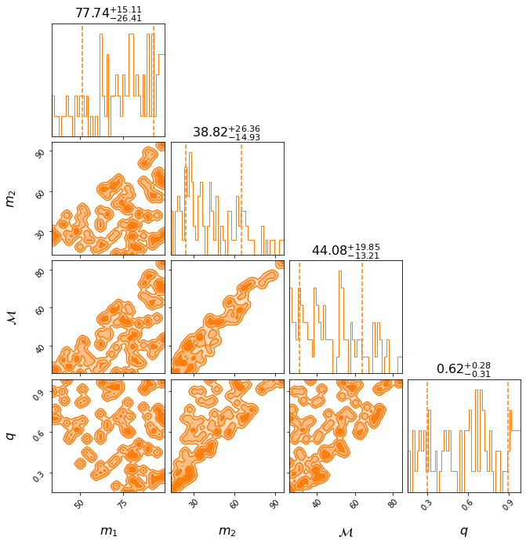
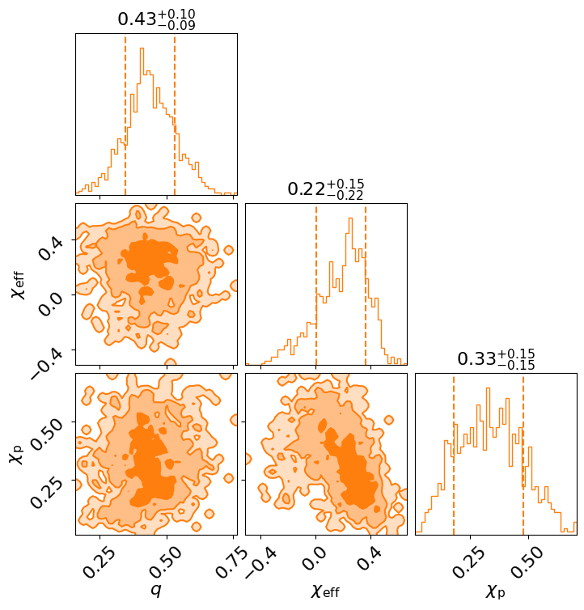
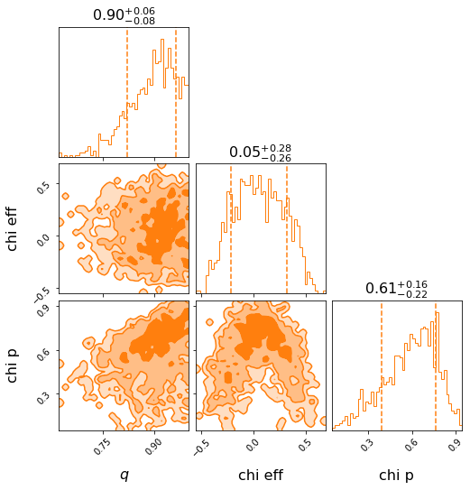
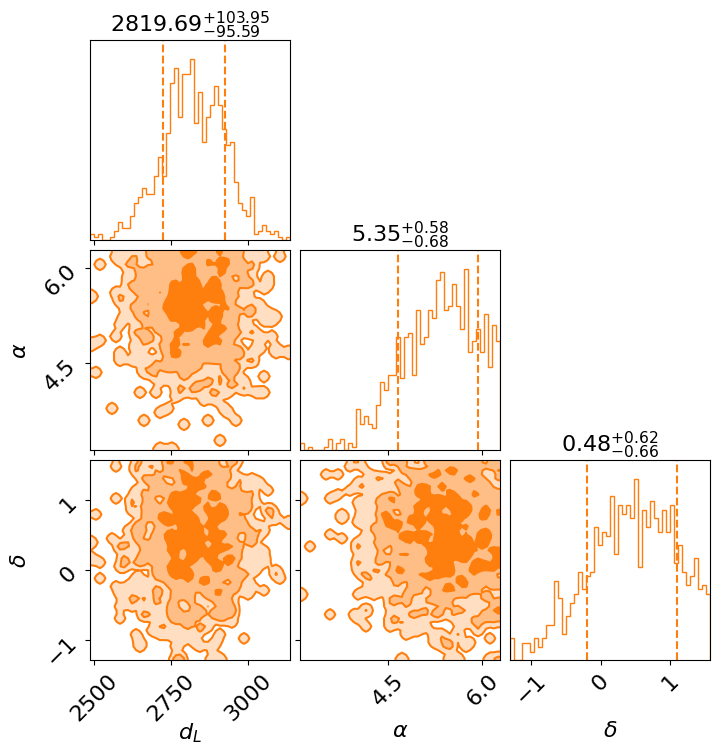
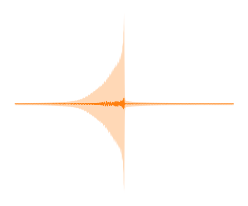

GW181242
%load_ext autoreload
%autoreload 2
%matplotlib inline
import pandas as pd
pd.set_option("display.max_rows", None, "display.max_columns", None)
! python -m pip install --upgrade pip -q
! pip install "nrsur_catalog @ git+https://github.com/cjhaster/NRSurrogateCatalog@main#egg" -q
GW181242#
Below are some plots for GW181242 from the NRSurrogate Catalog.
from nrsur_catalog import NRsurResult
nrsur_result = NRsurResult.load("GW181242")
# cache_dir is where the events will be downloaded to (defaults to "~/.nrsur_catalog_cache")
nrsur_result.posterior_summary()
|NURSUR CATALOG|22/02 17:39:45|INFO| Setting cache dir to: /Users/avaj0001/Documents/projects/nrsurrogate_catalog/tests/test_events_dir
| Posterior 90% CI | Prior | |
|---|---|---|
| Parameter | ||
| mass_1 | ${45.09}_{-8.98}^{+11.33}$ | Constraint(minimum=5, maximum=100, name='mass_... |
| mass_2 | ${39.70}_{-7.78}^{+10.06}$ | Constraint(minimum=5, maximum=100, name='mass_... |
| chirp_mass | ${36.77}_{-7.13}^{+9.19}$ | bilby.gw.prior.UniformInComponentsChirpMass(mi... |
| mass_ratio | ${0.90}_{-0.08}^{+0.06}$ | bilby.gw.prior.UniformInComponentsMassRatio(mi... |
| a_1 | ${0.30}_{-0.09}^{+0.10}$ | Uniform(minimum=0, maximum=0.99, name='a_1', l... |
| a_2 | ${0.84}_{-0.09}^{+0.08}$ | Uniform(minimum=0, maximum=0.99, name='a_2', l... |
| tilt_1 | ${1.09}_{-0.64}^{+0.69}$ | Sine(minimum=0, maximum=3.141592653589793, nam... |
| tilt_2 | ${1.63}_{-0.75}^{+0.71}$ | Sine(minimum=0, maximum=3.141592653589793, nam... |
| chi_eff | ${0.05}_{-0.26}^{+0.28}$ | NA |
| chi_p | ${0.61}_{-0.22}^{+0.16}$ | NA |
| ra | ${5.17}_{-0.70}^{+0.64}$ | Uniform(minimum=0, maximum=6.283185307179586, ... |
| dec | ${-0.40}_{-0.67}^{+0.72}$ | Cosine(minimum=-1.5707963267948966, maximum=1.... |
| geocent_time | ${2.00}_{-0.00}^{+0.00}$ | NA |
| luminosity_distance | ${4846.33}_{-98.43}^{+90.17}$ | bilby.gw.prior.UniformSourceFrame(minimum=100.... |
| phase | ${4.00}_{-0.78}^{+0.69}$ | Uniform(minimum=0, maximum=6.283185307179586, ... |
| psi | ${0.61}_{-0.43}^{+0.59}$ | Uniform(minimum=0, maximum=3.141592653589793, ... |
| phi_jl | ${2.66}_{-0.78}^{+0.76}$ | Uniform(minimum=0, maximum=6.283185307179586, ... |
| phi_12 | ${5.65}_{-0.66}^{+0.44}$ | Uniform(minimum=0, maximum=6.283185307179586, ... |
| phi_jl | ${2.66}_{-0.78}^{+0.76}$ | Uniform(minimum=0, maximum=6.283185307179586, ... |
| theta_jn | ${1.44}_{-0.74}^{+0.69}$ | Sine(minimum=0, maximum=3.141592653589793, nam... |
fig = nrsur_result.plot_corner(["mass_1", "mass_2", "chirp_mass", "mass_ratio"])

fig = nrsur_result.plot_corner(["a_1", "a_2", "tilt_1", "tilt_2"])

fig = nrsur_result.plot_corner(["mass_ratio", "chi_eff", "chi_p"])

fig = nrsur_result.plot_corner(["luminosity_distance", "ra", "dec"])

fig = nrsur_result.plot_signal(outdir=".")
XLAL Error - NRSur7dq4_Init_LALDATA (LALSimIMRPrecessingNRSur.c:184): Unable to resolve data file NRSur7dq4.h5 in $LAL_DATA_PATH
XLAL Error - NRSur7dq4_Init_LALDATA (LALSimIMRPrecessingNRSur.c:184): I/O error
XLAL Error - PrecessingNRSur_core (LALSimIMRPrecessingNRSur.c:1836): Error loading surrogate data.
XLAL Error - PrecessingNRSur_core (LALSimIMRPrecessingNRSur.c:1836): Generic failure
XLAL Error - XLALSimInspiralChooseTDWaveform (LALSimInspiral.c:1232): Internal function call failed: Generic failure
XLAL Error - XLALSimInspiralTDFromTD (LALSimInspiral.c:2533): Internal function call failed: Generic failure
XLAL Error - XLALSimInspiralTD (LALSimInspiral.c:2780): Internal function call failed: Generic failure
XLAL Error - XLALSimInspiralFD (LALSimInspiral.c:3021): Internal function call failed: Generic failure
|NURSUR CATALOG|22/02 17:39:51|WARNING| Unable to create a waveform: do you have NrSur7dq4 installed? Defaulting to IMRPhenomPv2
